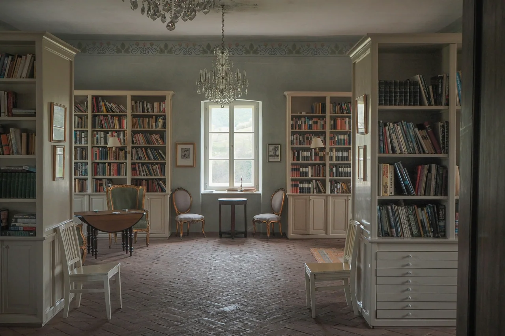
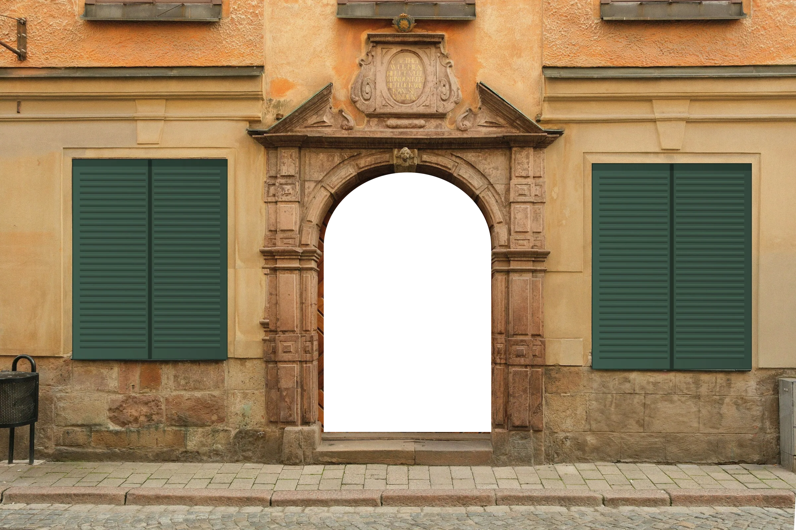

Dentro le Mura,
oltre le Mura.
Agenzia immobiliare a Lucca: case in vendita e in affitto, dal centro storico a Pisa e alla Versilia.
Ogni casa comincia
da una porta.
Noi ti accompagniamo dall'altra parte, con tempi chiari, costi spiegati prima e nessuna sorpresa.
Conosciamo Lucca
strada per strada.
Sappiamo dove batte il sole la mattina e quale vicolo resta fresco d'estate.
Non vendiamo metri quadri: raccontiamo luoghi. Siamo LuccAlfa e accompagniamo famiglie, investitori e chi arriva da lontano, dalla prima telefonata alla firma dal notaio. Lavoriamo in italiano e in inglese, dentro le Mura e in undici comuni tra la Piana, Pisa e la Versilia.


Case con carattere
Annunci di esempio: presto pubblicheremo quelli reali.
-
Piano nobile in un palazzo d'epoca, con soffitti alti e affaccio su una piazza pedonale.
Chiedi informazioni -
Villa su due piani tra ulivi e cipressi, a dieci minuti dalle Mura.
Chiedi informazioni -
Luminoso e appena ristrutturato, a due passi dall'università e dalla stazione.
Chiedi informazioni -
Muri in pietra, travi a vista e un ettaro di terreno nella Piana.
Chiedi informazioni -
A cinque minuti a piedi dalla spiaggia, con posto auto privato.
Chiedi informazioni -
Su tre livelli, con giardino privato e box doppio.
Chiedi informazioni
Il catalogo completo è sui principali portali, da Immobiliare.it a Gate-away. Non trovi quello che cerchi? Raccontacelo, cerchiamo noi per te.


Un solo referente,
ogni passaggio.
Dalla prima visita al rogito, e anche dopo la firma.

Vendita
Valutazione, servizio fotografico, promozione sui portali, selezione degli acquirenti e assistenza fino al rogito.

Acquisto
Ricerca su misura, visite organizzate, verifiche documentali e trattativa al tuo fianco.

Affitti
Locazioni a lungo termine, transitorie e turistiche, con selezione degli inquilini, contratto e registrazione.

Valutazione gratuita
Una stima onesta, basata su sopralluogo e vendite comparabili. Senza impegno.

Dall'estero
Per chi compra da lontano: video tour, codice fiscale, notaio, traduzioni e firma tramite procura.


-
Quattro passi,
zero sorprese.Il nostro metodo, dalla prima conversazione alla consegna delle chiavi.
-

Ascolto
Capiamo obiettivi, budget e tempi con una prima conversazione: di persona, al telefono o in video.
-

Selezione
Valutiamo l'immobile o selezioniamo le proposte più adatte, verificando subito la documentazione.
-

Trattativa
Gestiamo visite, proposta e negoziazione, tutelando le due parti con chiarezza.
-

Rogito
Coordiniamo notaio, banca e consegna delle chiavi. E restiamo a disposizione anche dopo la firma.


Dalle Apuane al mare.
-

Lucca, centro storico
Palazzi, appartamenti d'epoca e una vita che si fa a piedi, dentro le Mura.
-
Colline e Piana
Ville, casali e giardini tra Capannori, Porcari, Altopascio e Montecarlo.
-

Pisa e dintorni
Città universitaria e comuni vicini, come San Giuliano Terme e Cascina.
-

Versilia
Viareggio, Camaiore e Pietrasanta, tra il mare e le Apuane.

Undici comuni: Lucca, Capannori, Porcari, Montecarlo, Altopascio, Pisa, San Giuliano Terme, Cascina, Viareggio, Camaiore e Pietrasanta.
Hai dei dubbi? Bene.
Comprare, vendere o affittare casa solleva domande. Queste sono quelle che sentiamo più spesso.
- Sede Lucca, su appuntamento
- Orari Lunedì–sabato, 9:00–19:00
- Lingue Italiano e inglese
Quanto vale la mia casa a Lucca? Fate valutazioni gratuite?
Sì. LuccAlfa Immobiliare effettua una valutazione gratuita e senza impegno con sopralluogo. Il valore dipende da zona, stato di manutenzione, superficie, classe energetica e confronto con le vendite recenti comparabili.
Quali zone coprite oltre a Lucca?
Operiamo a Lucca (centro storico dentro le Mura e periferia), nella Piana di Lucca (Capannori, Porcari, Altopascio, Montecarlo), a Pisa e nei comuni vicini (San Giuliano Terme, Cascina) e in Versilia (Viareggio, Camaiore, Pietrasanta).
Quali documenti servono per vendere casa?
In genere servono: atto di provenienza, visura e planimetria catastale, attestato di prestazione energetica (APE), documenti di identità, eventuali titoli edilizi e certificazioni degli impianti, oltre al regolamento e ai rendiconti se l'immobile è in condominio. Ti guidiamo nella raccolta.
Come funziona l'acquisto di una casa in Italia?
I passaggi tipici sono: ricerca e visite, proposta d'acquisto con caparra, verifiche (urbanistica, catasto, ipoteche), contratto preliminare di compravendita, rogito davanti al notaio con pagamento del saldo e registrazione. Il notaio controlla la regolarità giuridica dell'atto.
Quali imposte si pagano acquistando casa?
Dipendono da venditore (privato o impresa), uso (prima o seconda casa) e tipo di immobile: imposta di registro, ipotecaria e catastale se si acquista da privato, IVA se si acquista da impresa, oltre a onorari del notaio e dell'agenzia. Le aliquote cambiano nel tempo, quindi vanno verificate con notaio o commercialista prima dell'acquisto.
Un cittadino straniero può comprare casa a Lucca?
Sì. I cittadini UE possono acquistare senza particolari limiti; per i cittadini extra-UE si applica in genere il principio di reciprocità. Serve un codice fiscale italiano, che si può ottenere anche dall'estero, e conviene farsi assistere da un notaio e, se necessario, da un traduttore.
Mi seguite anche se vivo all'estero?
Sì. Lavoriamo in italiano e in inglese: ricerca su misura, video tour, aiuto per il codice fiscale, coordinamento con notaio e banca e assistenza dopo l'acquisto. Se non puoi essere presente, puoi firmare tramite procura.
Seguite anche gli affitti?
Sì. Seguiamo locazioni abitative a lungo termine, contratti transitori e locazioni turistiche a Lucca e dintorni, dalla selezione degli inquilini alla stesura e registrazione del contratto.
Dove pubblicate gli annunci?
Oltre che sul nostro sito, pubblichiamo gli immobili sui principali portali italiani e internazionali, come Immobiliare.it, Idealista, Casa.it e Gate-away.com, per raggiungere sia acquirenti italiani sia stranieri.
Qual è la differenza tra vivere dentro le Mura di Lucca e fuori?
Dentro le Mura il centro storico offre vita pedonale, servizi a piedi e immobili d'epoca, con vincoli edilizi e poco parcheggio. Fuori, tra Piana e colline, si trovano più spazi, giardini e box auto, con prezzi al metro quadro generalmente diversi.

Parliamone
Raccontaci cosa cerchi o quale casa vuoi valutare. Rispondiamo di norma entro un giorno lavorativo.
- Telefono+39 000 000 0000
- Emailimmobiliare@luccalfa.it
- OrariLun–sab, 9–19